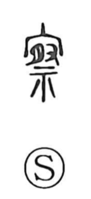

撮

Uncategorized
Kun: tsumamu, toru | On: satsu
to pinch ・ to pick ・ to take (a photo)
Explanation
撮 is a phono-semantic character: the hand element (扌) signals a manual action, while 最 functions as the phonetic and carries an old image. Shirakawa explains 最 as formed from a flesh component and 取, the latter originally describing the cutting off of an enemy’s left ear to record merit; 最 thus suggests a heap of gathered ears. Joined to the hand, the meaning focuses on taking something delicately with the fingertips—pinching or picking up a small amount—which underlies uses such as issatsu no tsuchi, “a pinch of soil.” By extension it also came to mean “to take” images, as in satsuei, photography.